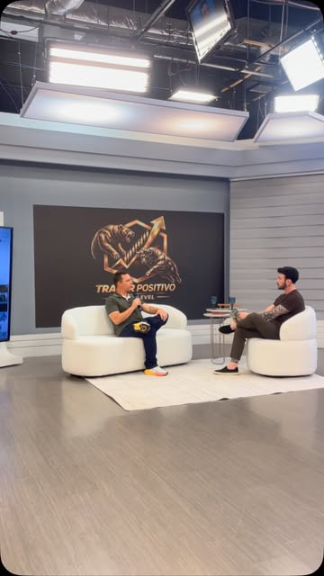

Na Sala Trader Positivo você acompanha a leitura e a execução do Marcelo em tempo real: onde ele entra, onde coloca o stop, quando fica de fora. E estuda o método com gravações, cursos e indicadores próprios.

Antes da abertura sai a leitura do dia: qual é o contexto, onde estão os níveis e o que precisa acontecer para entrar. Durante a sala, você vê a execução. Tudo fica registrado na Área do aluno.
Abriu acima da VWAP de ontem e segurou o POC. Compra em retorno à VWAP, com o Weis mostrando exaustão vendedora.
Onda compradora perdendo força na VAH do dia anterior. Venda só com a rejeição confirmada no candle.
O botão aparece 15 minutos antes. Quem tem o plano em dia entra com o próprio e-mail.
Toda sessão vira gravação, organizada por bloco, com o seu progresso e as suas anotações.
Telas e análises de exemplo, para mostrar o formato.
Ela trabalha três coisas que travam quem opera minicontratos: entrar sem um critério objetivo, deixar a perda crescer por não ter regra de risco e não conseguir repetir o processo todo dia.
Não é análise técnica clássica. É leitura de fluxo: entender quem está comprando, quem está vendendo e onde o dinheiro grande entrou. Com indicadores feitos para isso.
O preço médio do dia e as regiões onde o mercado mais negociou dizem se o preço está caro, barato ou em equilíbrio.
O volume de cada onda mostra se comprador ou vendedor está colocando dinheiro de verdade no movimento.
Muito esforço com pouco resultado avisa a exaustão antes do preço virar. Alvo mínimo de 2× o stop.
Cada parte tem uma função no seu aprendizado. Você não precisa estar em tudo, mas precisa saber para que serve cada uma.
Segunda a sexta, das 9h ao meio-dia. O Marcelo compartilha a tela, explica cada entrada, stop e saída, e mostra quando é melhor não operar.
Toda sessão fica gravada na Área do aluno, organizada por bloco: fundamentos, leitura de fluxo, gestão de risco e execução.
Do zero aos indicadores: o que são WIN e WDO, margem, ponto e tick, instalação e uso de cada indicador e gestão de risco na prática.
Os indicadores Trader Positivo para MetaTrader 5 e Profit, e a análise do dia antes da abertura, com os níveis que importam.
Agenda da sala, gravações, cursos com progresso, caderno de anotações, calendário econômico e relógio das bolsas.
Quem quiser, adiciona à assinatura e abre pela própria Área do aluno. É o sistema de gestão de risco que o Marcelo usa ao vivo: contratos pelo risco, stop diário e mensal, loss limit e performance. Ver como funciona →
Enquanto a maioria fala de trading, o Marcelo opera ao vivo, todo dia útil, no mini índice e no mini dólar. Cada entrada, cada stop e cada decisão de ficar de fora é explicada em tempo real.
A filosofia é simples: consistência bate resultado pontual. Um método sólido, repetido todo dia com disciplina e gestão de risco, é o que sustenta o trader no longo prazo.
Cada aluno avança no seu ritmo.
"Fiz mais em 2 meses de sala do que em 2 anos tentando sozinho. A diferença é ver o raciocínio por trás de cada operação."
"Antes eu operava sem meta e sem stop. Agora entendo o que é consistência de verdade."
"A sala é diferente. Não é palco: é o Marcelo operando de verdade, errando e acertando, na frente de todo mundo."
Depoimentos de exemplo: serão trocados pelos depoimentos reais dos alunos, com autorização.
O estudo é organizado em cinco etapas, cada uma apoiada na anterior. Resultado depende da sua execução e dos riscos do mercado.
Mini índice e mini dólar, ponto, tick, margem, horários e custos.
VWAP, Volume Profile e Weis Wave: onde, quem e quando.
Risco por operação, stop diário, meta e loss limit.
Aplicar o método junto com a sala, com stop e alvo definidos.
Repetir o processo, registrar e revisar as operações.
Todos os planos dão acesso à Área do aluno, às gravações, aos cursos e aos indicadores. A diferença é o nível de acompanhamento.
Para estudar o método no seu ritmo.
Opere junto com o Marcelo, todo dia.
Acompanhamento individual. Vagas limitadas.
Opcional em qualquer plano, aberto de dentro da Área do aluno: o sistema de gestão de risco do Marcelo, com contratos pelo risco, stops, loss limit e performance.
Se não for para você, peça o reembolso em até 7 dias da compra, como prevê o Código de Defesa do Consumidor.
O acesso vale enquanto o plano estiver em dia. A plataforma de operação (Profit ou MetaTrader 5) e a corretora são por sua conta.
Não. A trilha começa pelos fundamentos do mini índice e do mini dólar. Mas o ideal é estudar e treinar em simulador antes de usar dinheiro real.
Não. O objetivo é você entender a leitura e tomar as suas próprias decisões. O Marcelo mostra o raciocínio, não manda você entrar.
Sim. Todas as sessões ficam gravadas na Área do aluno, e o plano Lives Gravadas é pensado exatamente para quem estuda em outro horário.
Uma corretora com acesso à B3 e o Profit ou o MetaTrader 5. Os indicadores Trader Positivo funcionam no MetaTrader 5, e alguns também no Profit.
É o sistema de gestão de risco que o Marcelo usa ao vivo. Ele calcula contratos pelo risco, acompanha stop diário e mensal, loss limit e performance. É opcional: entra como adicional (Plus) em qualquer plano e fica dentro da Área do aluno.
Você tem 7 dias a partir da compra para pedir o reembolso, sem precisar justificar.
Se a proposta fez sentido, escolha o plano. Se ficou alguma dúvida, chame no WhatsApp antes de decidir.
 Trader Positivo · Marcelo Ceribelli
Trader Positivo · Marcelo Ceribelli